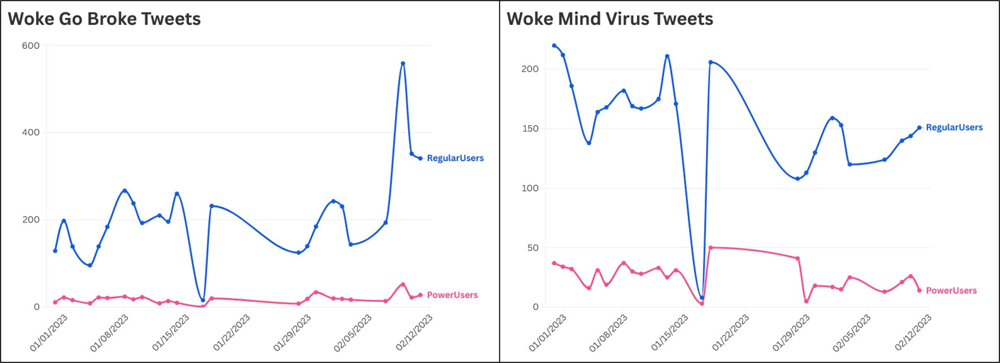
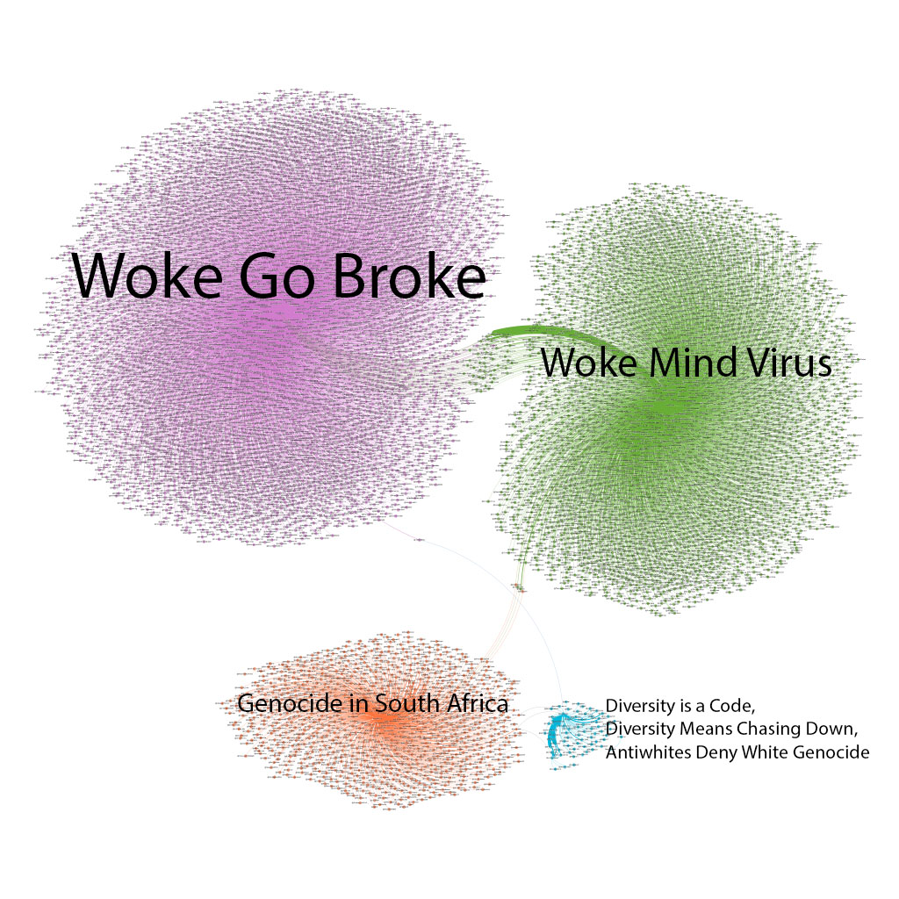
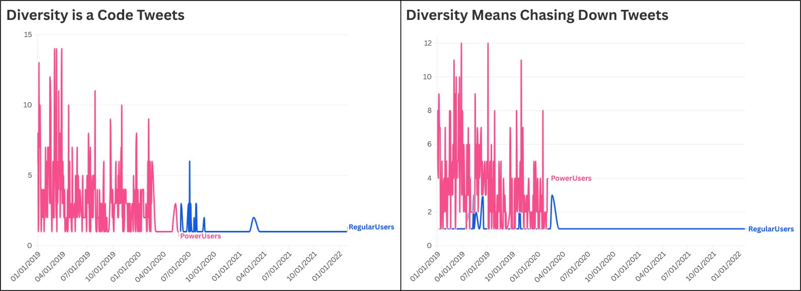

Stéfan Sinclair & Geoffrey Rockwell, Digital Pedagogy in the Humanities
“Data visualizations have a long history and much to offer, particularly when the amount of text exceeds what can be reasonably read and represented by more traditional means.”
— Sinclair & Rockwell
As we move toward bigger and bigger data, visualizations get more and more useful.
Treat Visualizations Critically
Sinclair & Rockwell — what to have students do
Test out different kinds of visualizations and “reflect on the graphical features and how they might or might not reflect evidence.”
Create their own — and think about how best to convey information.
Think about visualizations “not as objective representations of data,” but for how they construct knowledge and make arguments.
Key Conceptual Questions
Sinclair & Rockwell — four lenses
Presence: Where do we see visualizations? What are they designed to communicate? Who designs them, and for what audience?
Literacy: How do we read them? What are they showing — and hiding? Which features come from evidence, which from design? What are the common pitfalls?
Rhetoric: How can we communicate effectively with visualizations? Can we imagine new ways of using them in humanistic interpretation?
Visual Traditions: What is the history of a genre like the bar chart? How do traditions of interpretation shape how visualizations are read?
Key Design Questions
Sinclair & Rockwell — questions for making them
Can a visualization stand alone, or does it need text to contextualize it?
How is text graphical? How is an outline or a list a visualization?
What does interactivity add? How is a serious game a visualization?
Does a visualization have to be beautiful to communicate?
Do visualizations represent a truth about a phenomenon, or do they model something?
What is difficult to show? How can visualizations mislead?
Examples
Sinclair & Rockwell — where to start
Manovich names two core principles of information visualization: reduction (ignoring details of individual items to surface patterns across a subset of characteristics) and spatiality (using position, size, shape, and movement).
Drucker & Eskandar: “every aspect of visualization is subject to interpretation, even though most visualizations mask the uncertainty and the decision-making processes.”
Voyant (which Sinclair & Rockwell built) is easy to start with and offers a whole suite of tools for many kinds of visualization.
BatchGeo’s galleries show how many options exist — “students can be asked to compile an annotated set of their favorites” as inspiration for their own work.
Reduction & Spatiality in Action
A network map of coordinated slogans on X/Twitter

Each blob is thousands of accounts reduced to position, color, and size — Manovich’s principles made visible.
“Mainstream” Memes
Some slogans are used a few times by many people

Separating out frequent and infrequent users shows whether memes are shared across a wide user base.
Extreme Memes
Some slogans are used frequently by few people

Intensive posting by a few people can look like a widely shared idea.
Studio Ghibli and Generative AI
Kies & Stanfill — from algorithms to attribution
A 2025 trend: users prompting ChatGPT to recreate images in Studio Ghibli’s hand-drawn style.
Results were almost indistinguishable from actual film stills — despite OpenAI’s claim that guardrails were in place.
AI images raise three core legal questions that remain unresolved.
Copyright Basics
Kies & Stanfill — the ground rules
Media is non-rivalrous and non-excludable; it doesn’t automatically act like property without copyright.
US copyright is utilitarian: it incentivizes creation for public benefit — not as a reward for labor.
Two key limits: duration (life + 70 years, then public domain) and fair use (a four-factor balancing test; “transformative” use is the key standard).
Q1: Does Training on Copyrighted Material Infringe?
Kies & Stanfill — mixed outcomes so far
Most training data is copyrighted; using only public-domain material is an alternative, but rare. A wave of lawsuits (Disney, Universal, the RIAA, authors) has produced mixed court outcomes.
For infringement
Commercial use of entire works.
Creators receive no compensation.
Exploitative — especially of marginalized creators.
Against infringement
Training data is math, not copies.
Transformative use.
Societal benefit.
The Plagiarism Confusion
Kies & Stanfill — two different problems
Most public criticism frames AI as a “plagiarism machine.” Maybe so — but plagiarism and copyright infringement are not the same thing.
Plagiarism = a moral / attribution issue.
Infringement = a legal issue.
Many AI concerns are ethical rather than legal. Both matter — but conflating them muddies the debate.
Q2: Do AI Outputs That Resemble Works Infringe?
Kies & Stanfill — style, “feel,” and publicity
Style is not copyrightable — but courts don’t always follow the letter of the law.
Blurred Lines (2015): the “feel” of a song was found infringing without direct copying — a precedent relevant to AI.
Right of publicity is also at stake (e.g., OpenAI’s Scarlett Johansson soundalike).
Unresolved: Is generation copying? Is resemblance infringement?
Q3: Can AI Outputs Be Copyrighted?
Kies & Stanfill — human authorship in question
For
AI is a tool, like Photoshop.
Work-for-hire analogy.
Outputs can meet basic originality criteria.
Against
US Copyright Office (2025): human authorship is required.
Prompting alone is insufficient creative control.
“Copyright protects authorship, not sweat of the brow.”
International variation: the EU and Korea require human authors; China and Japan allow AI-assisted copyright with sufficient human input.
The Bigger Picture
Kies & Stanfill — power, not just law
All three questions remain legally unsettled — this will likely reach the Supreme Court.
Legal answers, moral intuitions, and everyday practice frequently diverge.
Power asymmetries matter: training-data practices risk (neo)colonial extraction from marginalized creators.
“Fair culture” (Madhavi Sunder) vs. “free culture.”
What This Means for You
Kies & Stanfill — practical guidance
Training models: public domain is safest; scholarly use favors fair use; don’t train and sell.
Outputs: avoid AI avatars of living people; “in the style of” prompting carries risk; scholarly use helps.
Your own work: publishers are wary of AI-generated or mixed content — document your human contributions carefully.
A Museum’s Sublime Hallucinations
Dan Cohen — the Museum of Jurassic Technology
Cohen writes about the Museum of Jurassic Technology — a project that is itself a commentary on museums, full of fake things presented as real.
“Prodding you to notice what placing an object in a glass vitrine conveys, and what you, the viewer, project onto the object.”
— Dan Cohen
How does a respectable-looking form encourage us to treat things as authoritative?
Real, Fake, and the Space Between
Cohen — a fake attribution that became real
“The learner must be led always from familiar objects toward the unfamiliar, guided along, as it were, a chain of flowers into the mysteries of life.”
— attributed to Charles Willson Peale
Now “widely attributed to Peale because of MJT,” the line is in fact not by Peale — it comes from his biographer, Charles Coleman Sellers. A project that deliberately blurs real and fake inside itself has also generated misinformation outside itself.
Human Fakeness vs. AI Hallucination
Cohen — the contrast that closes the loop
“It’s hard to imagine artificial general intelligence producing anything like what’s inside MJT, because the engineer’s concept of AGI is so far from the actual human mind, which seems to have an infinite ability to be peculiar and surprising, and to prospect for meaning, understanding, and joy in the strangest of places.”
— Dan Cohen
This Week
NEH Workshop 3: AI for Visual Analysis — June 10, 10 AM–noon, CHDR.
Discussion: Workshop Exercise — Visual Analysis (due Sunday, June 14). Using Claude Artifacts, upload images you may legally use (archival photos, artwork, maps, data visualizations) and have Claude analyze, describe, or interpret them. Build metadata and a visual tool for exploring them.
Reflect: how does AI read visual material compared to trained humanistic interpretation? What does it notice, what does it miss?
Readings: Sinclair & Rockwell, “Visualization”; Kies & Stanfill, “From Algorithms to Attribution”; Cohen, “A Museum’s Sublime Hallucinations.”
See weeks/week-05.md on Canvas for full reading links and the discussion prompt.